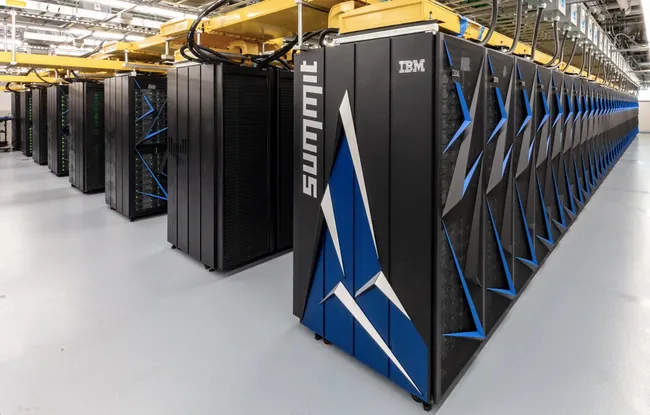
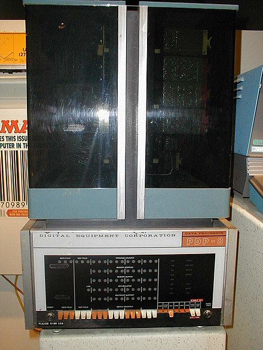
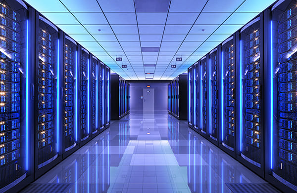

หน้าหลัก
ยินดีต้อนรับสู่โครงงานเกี่ยวกับประเภทของคอมพิวเตอร์!
เกี่ยวกับโครงงาน
โครงงานนี้มุ่งเน้นการศึกษาและแบ่งปันข้อมูลเกี่ยวกับประเภทต่างๆ ของคอมพิวเตอร์ คอมพิวเตอร์มีประสิทธิภาพสูงและสามารถทำงานได้หลายรูปแบบ ขึ้นอยู่กับโปรแกรมหรือชุดคำสั่งที่มนุษย์สร้างขึ้น เช่น โปรแกรมทางการแพทย์ โปรแกรมสำนักงาน และโปรแกรมด้านมัลติมีเดียสำหรับดูหนัง ฟังเพลง หรือเล่นเกม คอมพิวเตอร์สามารถแบ่งออกเป็น 7 ประเภทตามการใช้งานดังนี้ ครับ!
ประเภทของคอมพิวเตอร์
-

-
ซุปเปอร์คอมพิวเตอร์ (Supercomputer)
เป็นคอมพิวเตอร์ขนาดใหญ่ที่ออกแบบมาเป็นพิเศษ มีประสิทธิภาพสูงในการประมวลผลที่ซับซ้อน และสามารถคำนวณได้มากกว่าหนึ่งล้านล้านครั้งต่อวินาที โดยมีโปรเซสเซอร์มากกว่า 100 ตัว หน่วยวัดความเร็วของซุปเปอร์คอมพิวเตอร์คือ จิกะฟลอบ (Gigaflop) ซุปเปอร์คอมพิวเตอร์เหมาะสำหรับงานที่ต้องการการคำนวณตัวเลขมาก ๆ ในเวลาสั้น ๆ เช่น การพยากรณ์อากาศ การวิจัยทางการแพทย์ การทหาร วิศวกรรมเคมีและปิโตรเลียม การสร้างโมเดลที่ซับซ้อน การวิจัยพันธุกรรมมนุษย์ และโครงสร้างดีเอ็นเอ (DNA) เนื่องจากมีราคาสูง จึงมักใช้กับงานเฉพาะด้านโดยรัฐบาลหรือธุรกิจขนาดใหญ่
-
เมนเฟรม (Mainframe)
เป็นคอมพิวเตอร์ขนาดใหญ่ที่พัฒนาตั้งแต่ยุคแรก ๆ ของคอมพิวเตอร์ มีรูปร่างเหมือนตู้ขนาดใหญ่ที่บรรจุอุปกรณ์ภายในจำนวนมาก ราคาสูงและเหมาะสำหรับงานที่ต้องการการประมวลผลที่ซับซ้อน เช่น วิศวกรรม วิทยาศาสตร์ งานธนาคาร และการตรวจสอบบัญชีลูกค้า อย่างไรก็ตาม ปัจจุบันเมนเฟรมคอมพิวเตอร์ไม่นิยมใช้แล้ว เนื่องจากราคาสูง ใช้งานยาก และคอมพิวเตอร์ประเภทอื่น ๆ ได้พัฒนาให้มีประสิทธิภาพเทียบเท่าเมนเฟรมคอมพิวเตอร์ในราคาที่ถูกกว่าและใช้งานง่ายกว่า

-
มินิคอมพิวเตอร์ (Minicomputer)
เป็นคอมพิวเตอร์ที่มีประสิทธิภาพสูงกว่าคอมพิวเตอร์ส่วนบุคคล (ไมโครคอมพิวเตอร์) แต่ต่ำกว่าเมนเฟรมคอมพิวเตอร์ มีขนาดใหญ่และสามารถรองรับการทำงานจากผู้ใช้หลายคนพร้อมกันในงานที่แตกต่างกัน แม้ชื่อจะฟังดูเหมือนคอมพิวเตอร์ขนาดเล็กอย่าง Intel NUC แต่จริง ๆ แล้วมินิคอมพิวเตอร์มีขนาดใหญ่รองลงมาจากเมนเฟรม นิยมใช้ในงานเฉพาะทาง เช่น ในบริษัทใหญ่ ๆ อย่างโรงปูนซีเมนต์ ตลาดหลักทรัพย์ หรือสถาบันการศึกษา ลักษณะการทำงานคล้ายกับเซิร์ฟเวอร์ (Server) ที่ใช้ในปัจจุบัน
-
ไมโครคอมพิวเตอร์ (Microcomputer)
เป็นคอมพิวเตอร์ขนาดเล็กที่นิยมใช้งานกันอย่างแพร่หลาย ไม่ว่าจะเป็นที่บ้านหรือสำนักงาน เช่น Intel NUC หรือ Lenovo Tiny ที่เป็นมินิพีซี (Mini PC) จัดอยู่ในกลุ่มคอมพิวเตอร์ตั้งโต๊ะ ไมโครคอมพิวเตอร์มีประสิทธิภาพดีและได้รับการพัฒนาให้มีความสามารถสูงขึ้น สามารถทำงานได้หลากหลาย ตั้งแต่การใช้งานทั่วไปไปจนถึงการทำงานที่ต้องการประสิทธิภาพสูง เช่น PC Workstation

-
เซิร์ฟเวอร์คอมพิวเตอร์ (Server Computer)
คอมพิวเตอร์แม่ข่ายหรือเซิร์ฟเวอร์ (Server) เป็นคอมพิวเตอร์ที่ให้บริการด้านเครือข่ายและเป็นศูนย์กลางให้กับเครื่องลูกข่าย มีหน้าที่หลักในการจัดเก็บข้อมูล มีประสิทธิภาพและความเสถียรสูง สามารถให้บริการแก่ผู้ใช้จำนวนมากได้ เซิร์ฟเวอร์สามารถแยกประเภทการใช้งานได้ตามโปรแกรมที่ทำงานบนระบบปฏิบัติการ (OS) เช่น Windows Server การใช้งานเซิร์ฟเวอร์ที่นิยมได้แก่ เว็บเซิร์ฟเวอร์ (Web Server), โดเมนเนมเซิร์ฟเวอร์ (DNS Server), และไฟล์เซิร์ฟเวอร์ (File Server) เป็นต้น


คอมพิวเตอร์มือถือ (Hand-held Personal Computer)
เป็นคอมพิวเตอร์แบบพกพาขนาดเล็กเท่าฝ่ามือ มีน้ำหนักเบา สามารถใช้งานโดยถืออยู่บนมือ ส่วนใหญ่ใช้ในร้านอาหารสำหรับรับออเดอร์ ใช้เช็คสินค้าตามห้างสรรพสินค้า หรือร้านสะดวกซื้อ เช่น Seven Eleven เป็นต้น

คอมพิวเตอร์แบบฝัง (Embedded Computer)
เครื่องคอมพิวเตอร์เกรดอุตสาหกรรมขนาดเล็ก ถูกออกแบบมาเพื่อให้รองรับการทำงานทุกทุกสภาพแวดล้อม สามารถทำงานได้ตลอดเวลา ใช้พลังงานน้อย ตัวเครื่องทำจากอลูมิเนียมและโลหะ ระบายความร้อนได้ดีโดยไม่ต้องใช้พัดลม
สมาชิกกลุ่ม
ด.ช.ปริญยากรณ์ ไชยเสริม 3 ม.2/4
ด.ช.ทัตเทพ ศรีสุวรรณ 1 ม.2/4
ด.ช.พัชร เพ็ชรเขียว 4 ม.2/4
ด.ช.ชยพล เรืองฉาย 21 ม.2/4